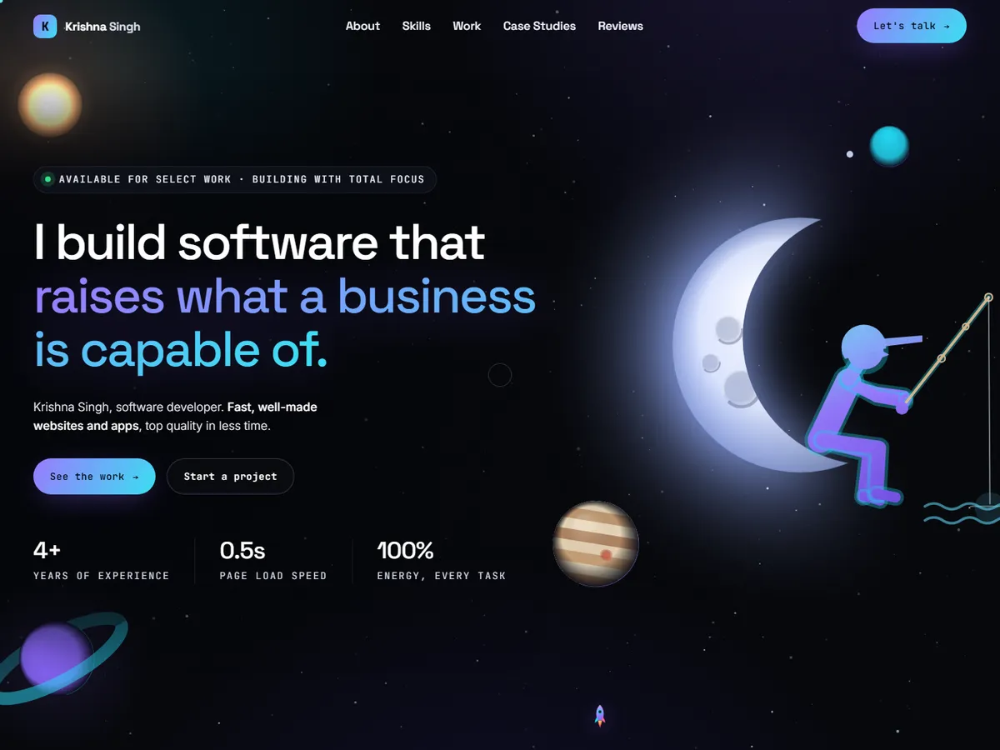

Launched fast. Built to last.
A few projects we've taken from idea to real users.
Case studies
Problems we've solved.
-
Brand and web app
From a great idea to its first 1,000+ users.
What changedNo brand, no product, no website at the start. We built all three.
The brandParkTag
Read the case study -
Brand and website
From a new venture to the people it serves.
What changedA new business with no brand, no website and no way to reach people. We built the brand, the website, email and a newsletter.
The brandPathMole Expert Lab
Read the case study -
Website
From a slow site to a story told in full.
What changedA site that took over 7 seconds to load. We rebuilt it and wrote every page.
The brandDr. Arpan Gandhi
Read the case study
Selected projects
More of what we've built.
-
ParkTagBrand and web app
A founder's idea, taken from nothing to a brand and web app with 1,000+ users.
- We worked through every part of the idea with the founder
- Brand and positioning, then the first version built from scratch
- Opens in under half a second, with nothing to install
- Still getting better every day, shaped by feedback from real users
Visit the live site (opens in a new tab)

-
PathMole Expert LabBrand and website
A new business with no brand, no website and no way to be found. We built everything from scratch.
- Brand and positioning first, then a 20+ page website
- Three ways to get in touch: an enquiry form that stores no private details, chat and click to call
- Email and a newsletter set up and connected to the website
- Easy to find in search and AI answers, and works well on the smallest phones
Visit the live site (opens in a new tab)

-
Dr. Arpan GandhiWebsite
An old website that took over 7 seconds to load and didn't show the full story of the work. We rebuilt it from scratch.
- We wrote the text from everything published, posts online and the old site
- Opens with a moving headline and a running list of highlights
- Each part of the work appearing gently as you scroll
- Fast on every screen, and one step to get in touch
Visit the live site (opens in a new tab)

-
Krishna Singh portfolioWebsite
Our founder's own portfolio, built from scratch: a space themed site that shows his work, skills and case studies.
- An illustrated night sky on the opening screen
- Work, skills, case studies and a contact form on one page
Visit the live site (opens in a new tab)

-
Employee Activity MonitoringWeb app
Dashboards that show activity for individuals and teams across 100+ employees.
- Made the dashboards load 40% faster, across 100+ different views
- Secure sign in that gives each person the right access for their role
-
Data Visualization PlatformWeb app
An app that turns complex transport data into clear visuals.
- Maps 1,000+ connections in detail
- Stays fast and smooth as the data grows
- Hosted in the cloud, so it stays quick as more people use it
Got a great idea, but nothing built yet?
No brand, no product, no website? We'll build all three and put your idea in front of real users fast, so you learn what works before you spend big.
Enable businesses to do more.